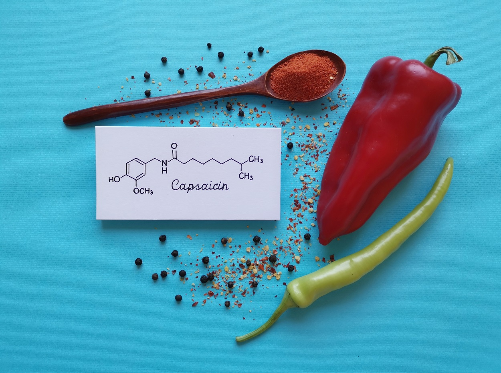

When police officers uses pepper spray to subdue suspects, there is a risk that they may be inadvertently exposed to its effects. For this reason, officers are trained to be aware of prevailing winds that might blow the spray in their faces. In addition, officers experience its effects in their classes to help teach them how to react in appropriately should this occur.
People who suffer from severe asthma or who are under the influence of drugs may face some risk of injury or death if they are exposed to pepper spray. This is generally attributed to a potentially fatal condition called “excited delirium” that involves subjects who suffocate or experience heart failure after undergoing tremendous exertion while resisting arrest. Present research indicates that pepper spray is not a direct causal factor in such cases of in-custody death.
The Journal of Investigative Ophthalmology and Visual Science published a study that concluded that one exposure of the eye to OC is harmless but repeated exposure can result in long-lasting changes to the cornea, the outermost thin layer of transparent tissue in the front of the eye. This study concluded that a single exposure to pepper spray causes no lasting negative effects upon visual acuity.
Capsaicin is so hot that a person’s tongue would blister if he or she were to drink a glass containing one drop of capsaicin diluted in 100 000 drops of water.
